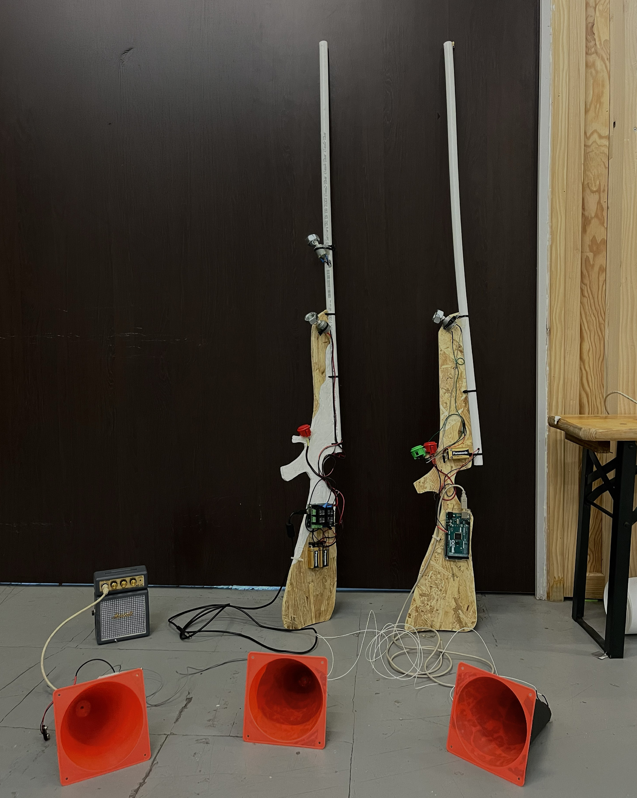
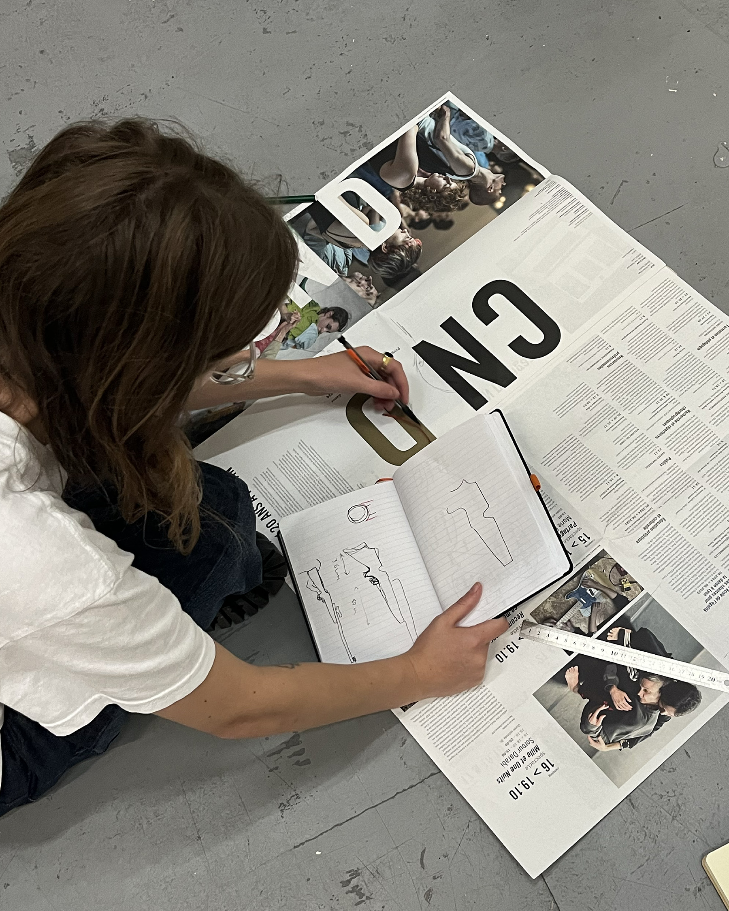
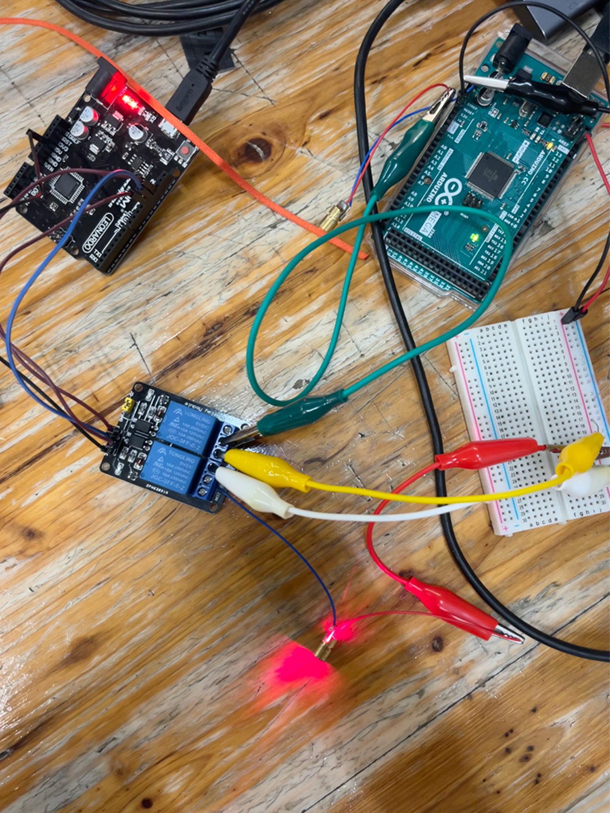
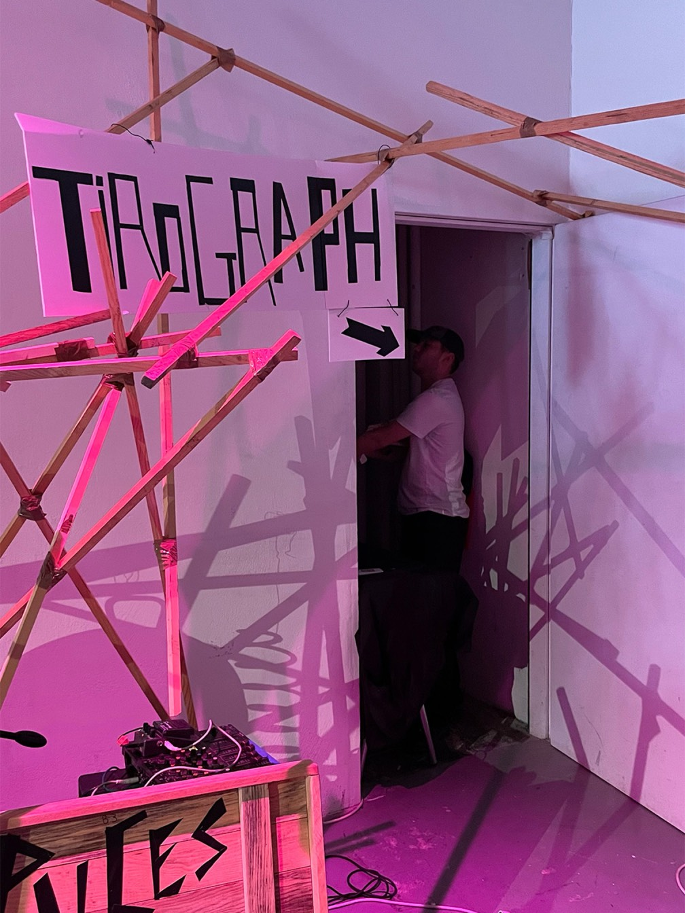

Atelier avec le collectif BrutPop à Mains d'œuvres pour la Kermesse Sonique. En binôme et dans l'esprit de la kermesse et de la fête foraine, nous avons développé une super « carabine-laser-vibrante » et des « cibles-plots-photosensibles-sonores ».



